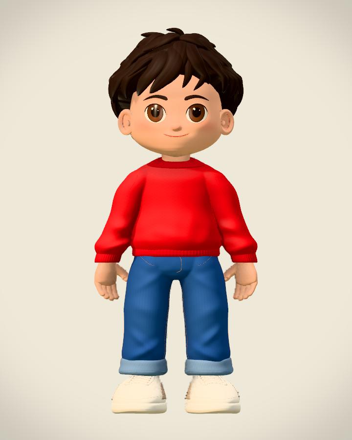
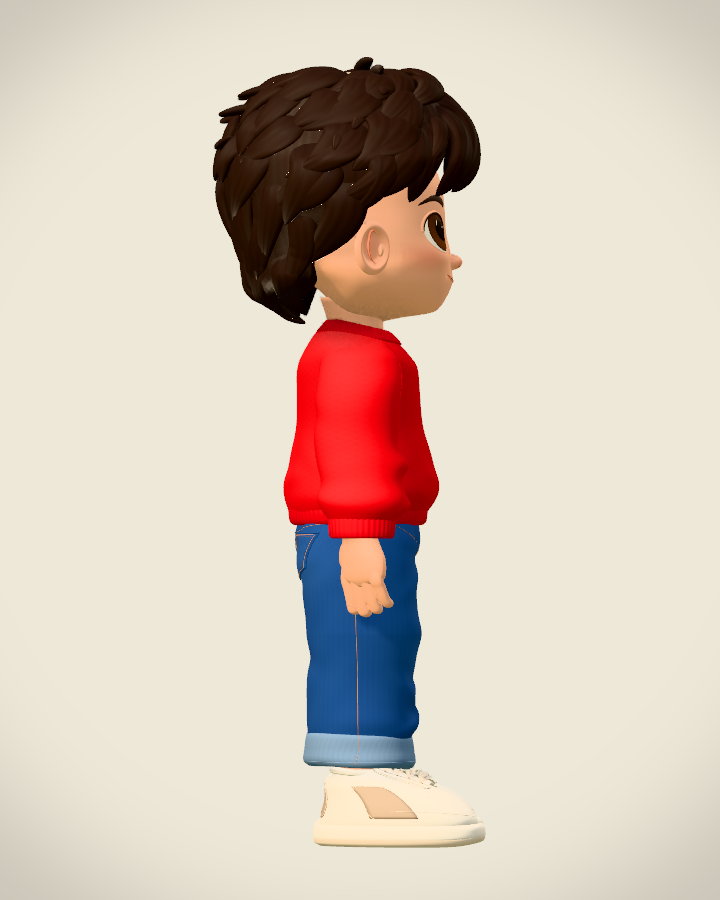
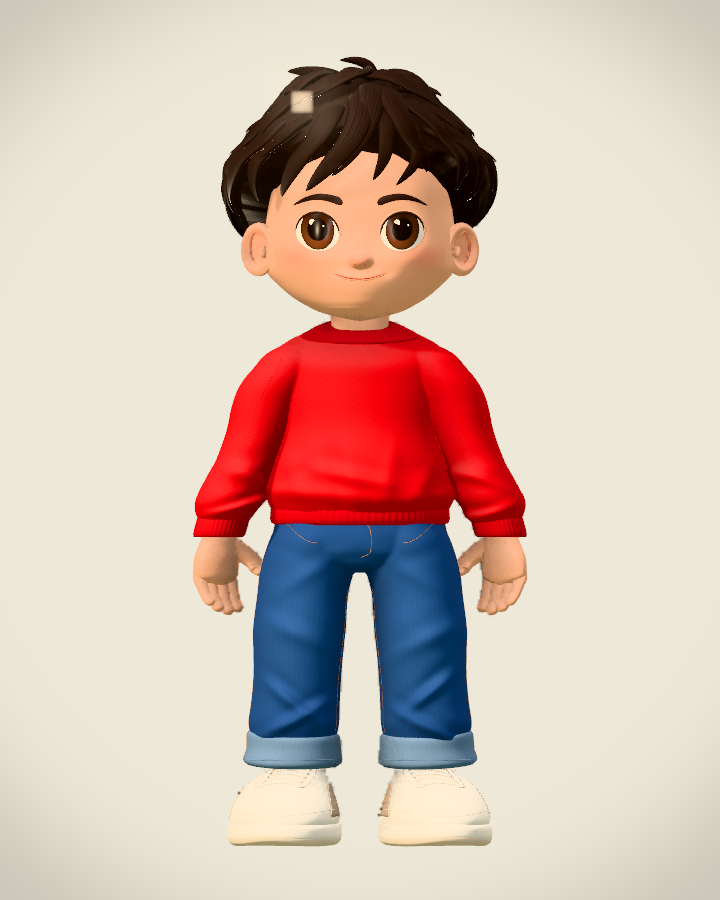
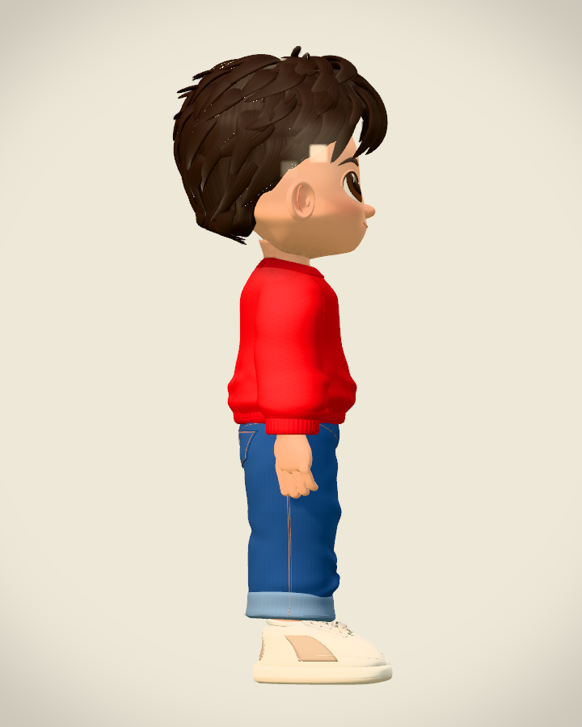

<!doctype html>
<html lang="zh-CN">
<meta charset="utf-8">
<meta name="viewport" content="width=device-width, initial-scale=1">
<title>Grassy · 本轮精修前后对比</title>
<style>
*{box-sizing:border-box}html,body{margin:0;background:#f1f0ec;color:#222c2c;font-family:"PingFang SC","Noto Sans CJK SC",system-ui,sans-serif}main{width:1440px;padding:40px}header{height:148px;display:flex;align-items:flex-start;justify-content:space-between;padding:5px 0 20px}h1{font-size:42px;letter-spacing:-1px;margin:10px 0 12px;line-height:1.25}header small{font-size:14px;letter-spacing:3px;color:#536968}header p{margin:0;font-size:19px;color:#68736f}.badge{margin-top:42px;border:1px solid #c0ccc5;border-radius:24px;padding:12px 20px;font-size:17px;background:#e8eee7;color:#456453}.columns,.row{display:grid;grid-template-columns:240px 1fr 1fr;column-gap:14px}.columns{height:54px;align-items:center;font-size:22px;font-weight:600;color:#435451}.columns div:not(:first-child){text-align:center}.row{height:720px;margin-bottom:16px;border-top:1px solid #c9d1cc;padding-top:14px}.label{display:flex;flex-direction:column;justify-content:center;padding:0 24px 0 4px}.label strong{font-size:29px;line-height:1.3;letter-spacing:-.7px;font-weight:650}.label span{font-size:18px;color:#70807a;margin-top:13px}.label em{font-size:15px;font-style:normal;color:#89928c;margin-top:8px}.frame{height:700px;background:#dfe4e6;border:1px solid #cbd3d2;border-radius:8px;overflow:hidden;display:flex;justify-content:center;align-items:center}.frame img,.frame canvas{display:block;width:560px;height:700px;max-width:100%;object-fit:contain}.reference .label strong{color:#3c6654}.reference .frame{border:2px solid #b8cbbf;background:#e4e9e6}footer{display:flex;justify-content:space-between;gap:30px;border-top:1px solid #c9d1cc;padding-top:22px;color:#6b7973;font-size:16px;line-height:1.7}footer strong{color:#465c50;font-weight:500}#error{white-space:pre-wrap;color:#a52323}
</style>
<main>
<header><div><small>PELICAN 429 / GRASSY</small><h1>发束与衣物精修 · 前后对比</h1><p>相同镜头与灯光，对照原画、修改前和本轮模型。</p></div><div class="badge">gpt6.1astra · 3.1 格</div></header>
<div class="columns"><div>版本 / MODEL</div><div>正面 / FRONT</div><div>侧面 / SIDE →</div></div>
<section class="row reference" aria-label="原画对照">
  <div class="label"><strong>原画</strong><span>已确认角色参考</span><em>按可见轮廓等比对齐</em></div>
  <div class="frame"><canvas id="reference-front" width="720" height="900" aria-label="原画正面"></canvas></div>
  <div class="frame"><canvas id="reference-right" width="720" height="900" aria-label="原画侧面"></canvas></div>
</section>
<section class="row" aria-label="修改前">
  <div class="label"><strong>修改前</strong><span>gpt6.1astra · 精细版</span></div>
  <div class="frame"></div>
  <div class="frame"></div>
</section>
<section class="row" aria-label="gpt6.1astra版本">
  <div class="label"><strong>本轮模型</strong><span>gpt6.1astra · 精细版</span></div>
  <div class="frame"></div>
  <div class="frame"></div>
</section>
<footer><div><strong>同一镜头 · 同一灯光 · 同一高度</strong><br>3D 使用展示场的实际精细模型，同一平视镜头；人物全高 3.10 格。</div><div>原画保留原始颜色与比例。<br>所有侧面均朝右；截图未做修形或调色。</div></footer>
<pre id="error" role="alert"></pre>
</main>
<script type="module">
async function reference(view){
  const image=new Image();image.src=`../model-comparison/reference-${view}.png`;await image.decode();
  const source=document.createElement('canvas');source.width=image.width;source.height=image.height;
  const ctx=source.getContext('2d');ctx.drawImage(image,0,0);
  const pixels=ctx.getImageData(0,0,source.width,source.height).data;
  let left=source.width,top=source.height,right=-1,bottom=-1;
  for(let y=0;y<source.height;y++)for(let x=0;x<source.width;x++)if(pixels[(y*source.width+x)*4+3]>32){left=Math.min(left,x);right=Math.max(right,x);top=Math.min(top,y);bottom=Math.max(bottom,y);}
  if(right<left)throw new Error(`参考图缺少可见轮廓：${view}`);
  const canvas=document.getElementById(`reference-${view}`),target=canvas.getContext('2d');
  const h=900*3.1/3.55,w=(right-left+1)*h/(bottom-top+1);
  target.drawImage(image,left,top,right-left+1,bottom-top+1,(720-w)/2,(900-h)/2,w,h);
}
Promise.all([reference('front'),reference('right'),document.fonts.ready,...[...document.images].map(image=>image.decode())]).then(()=>{document.body.dataset.ready='true';}).catch(error=>{document.getElementById('error').textContent=error.message;throw error;});
</script>
</html>
